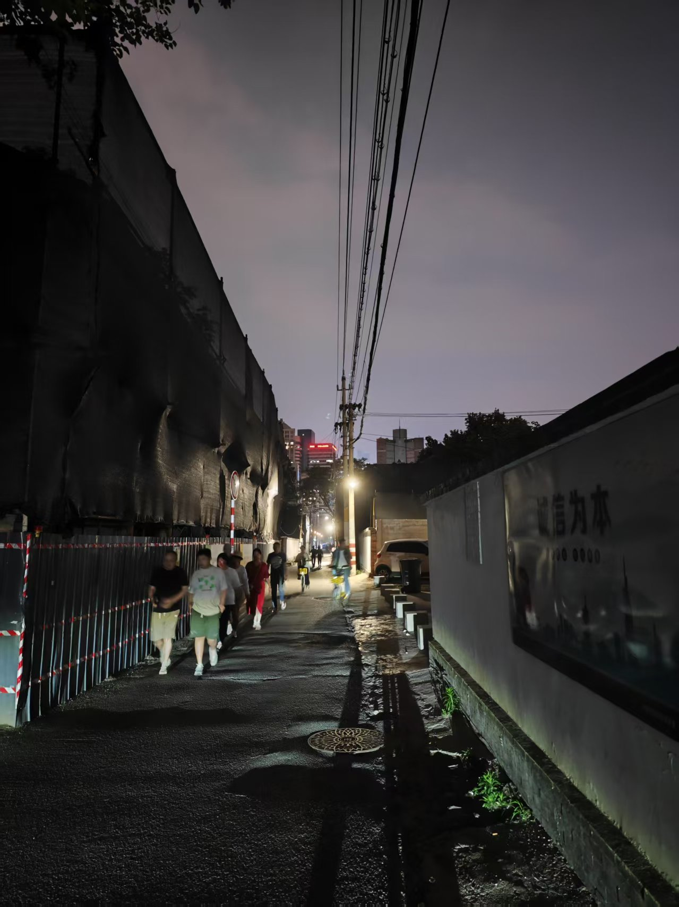

「どうしても負けたくない」
私はそう自分に言い聞かせた。なぜなら、負けることは死を意味したからだ。
犬に出会った時、もし弱気を見せれば、すぐに「ワンワン」と吠えられ、追いかけられた。怖がっている時に、犬には何か嗅ぎつけられるような気配があるように感じたのだ。
犬だけでなく、人間も同じだ。どうしても負けたくない。これはまるでラクダのような感情だ。死ぬまでひたすら重いものを背負い続ける。
しかし、時には「つまらないな！」と思うこともあった。何かをやりかけている途中で投げ出し、虚無感を覚えることも。
こんなことに何の意味もない！欲望なんてどうせ短いものだ。誰もがいつか死を迎える。これはまるでライオンのような感情かもしれない。全てを破壊したい。
そんな時、「もし、彼・彼女に会ったら、きっと」とふと思った。彼女と会うことを想像した時、まだ動力が湧き上がってくるのを感じた。
たとえ意味がなくても、ゲームのようにプレイすることはできる。
面白さを探し求めていけばいい。私はまだ、子供なのだ。
【原文】
「どうしても負けたくない」
こう自分に言った。なぜなら、負けたら死んだ。
犬と会ったとき、弱気がでれば、すぐに追うられた、ワンワンと。びびってる時に何か犬の嗅ぐれる気味があると思うた。
犬だけでなく、人と同じだ。どうしても負けたくない。キャメルような感情ですね、死ぬまでひたすら重いことを負んぶ。
でも、時には、「つまらないな！」と思った。やり途中のことを捨てて、虚無を感じた。
こうしてなんの意味も無い！欲望とはどうせ短いなもの、皆んなだででもいつも死ぬ。こらはライオンような感情かもしれない、全てを壊した。
「もし、彼・彼女とあったら、きっと」といきなり思った。彼女と会ったら、そう思うたとき、動力がまだ湧きあがた。
意味がなくどしでも、ゲームとようなプレーする事ができる。
面白さをすがしていきばいい。まだ、子供になった。
【改善後】
「どうしても負けたくない」
私はそう自分に言い聞かせた。なぜなら、負けることは死を意味したからだ。
犬に出会った時、もし弱気を見せれば、すぐに「ワンワン」と吠えられ、追いかけられた。怖がっている時に、犬には何か嗅ぎつけられるような気配があるように感じたのだ。
犬だけでなく、人間も同じだ。どうしても負けたくない。これはまるでラクダのような感情だ。死ぬまでひたすら重いものを背負い続ける。
しかし、時には「つまらないな！」と思うこともあった。何かをやりかけている途中で投げ出し、虚無感を覚えることも。
こんなことに何の意味もない！欲望なんてどうせ短いものだ。誰もがいつか死を迎える。これはまるでライオンのような感情かもしれない。全てを破壊したい。
そんな時、「もし、彼・彼女に会ったら、きっと」とふと思った。彼女と会うことを想像した時、まだ動力が湧き上がってくるのを感じた。
たとえ意味がなくても、ゲームのようにプレイすることはできる。
面白さを探し求めていけばいい。私はまだ、子供なのだ。
------
【コメント】
- **「こう自分に言った」→「私はそう自分に言い聞かせた」**：より自然で、自分の心に語りかけるニュアンスが伝わる表現にしました。
- **「負けたら死んだ」→「負けることは死を意味したからだ」**：「死んだ」は過去の事実を表しますが、ここでは負けることの持つ意味を強調するために「死を意味した」としました。
- **「犬と会ったとき、弱気がでれば、すぐに追うられた、ワンワンと。」→「犬に出会った時、もし弱気を見せれば、すぐに「ワンワン」と吠えられ、追いかけられた。」**：「会ったとき」よりも「出会った時」の方が自然です。「弱気がでれば」は「弱気を見せれば」の方が適切です。「追うられた」は受け身の表現として「追いかけられた」に修正しました。鳴き声の「ワンワン」は鉤括弧で囲むとより分かりやすくなります。
- **「びびってる時に何か犬の嗅ぐれる気味があると思うた。」→「怖がっている時に、犬には何か嗅ぎつけられるような気配があるように感じたのだ。」**：「びびってる」は口語的すぎるため「怖がっている」に。「嗅ぐれる気味」は不自然な表現なので「嗅ぎつけられるような気配」に修正しました。「思うた」は口語的表現なので「感じたのだ」としました。
- **「キャメルような感情ですね、死ぬまでひたすら重いことを負んぶ。」→「これはまるでラクダのような感情だ。死ぬまでひたすら重いものを背負い続ける。」**：「キャメル」はカタカナ表記で統一し、「ラクダ」にしました。「～のような感情ですね」は少し唐突なので「これはまるで～のような感情だ」としました。「負んぶ」は「おんぶ」と読み、通常は背負う意味ですが、ここでは「背負い続ける」がより適切です。
- **「やり途中のことを捨てて、虚無を感じた。」→「何かをやりかけている途中で投げ出し、虚無感を覚えることも。」**：「やり途中」は「やりかけている途中」がより自然です。「捨てて」は「投げ出し」の方が適しています。「虚無を感じた」は「虚無感を覚えることも」とすることで、そういった感情になる場合がある、というニュアンスを加えました。
- **「こうしてなんの意味も無い！欲望とはどうせ短いなもの、皆んなだででもいつも死ぬ。こらはライオンような感情かもしれない、全てを壊した。」→「こんなことに何の意味もない！欲望なんてどうせ短いものだ。誰もがいつか死を迎える。これはまるでライオンのような感情かもしれない。全てを破壊したい。」**：「こうして」は「こんなこと」の方が文脈に合います。「短いなもの」は「短いもの」が自然です。「皆んなだででもいつも死ぬ」は「誰もがいつか死を迎える」とすることで、より自然な表現にしました。「こらは」は「これは」に修正しました。「全てを壊した」は過去形ですが、感情の表現なので「全てを破壊したい」と願望形にしました。
- **「もし、彼・彼女とあったら、きっと」といきなり思った。彼女と会ったら、そう思うたとき、動力がまだ湧きあがた。」→「そんな時、「もし、彼・彼女に会ったら、きっと」とふと思った。彼女と会うことを想像した時、まだ動力が湧き上がってくるのを感じた。」**：「とあったら」は「に会ったら」が適切です。「といきなり思った」は「とふと思った」の方が自然です。「そう思うたとき」は「そう想像した時」や「想像した時」など、行動を伴う想像であることが伝わるようにしました。「湧きあがた」は「湧き上がってくるのを感じた」とすることで、動力が湧き上がってくる様子とそれを感じ取った様子を表現しました。
- **「意味がなくどしでも、ゲームとようなプレーする事ができる。」→「たとえ意味がなくても、ゲームのようにプレイすることはできる。」**：「意味がなくどしでも」は「たとえ意味がなくても」が自然です。「ゲームとような」は「ゲームのように」が適切です。「プレーする事ができる」は「プレイすることはできる」としました。
- **「面白さをすがしていきばいい。まだ、子供になった。」→「面白さを探し求めていけばいい。私はまだ、子供なのだ。」**：「すがしていきばいい」は「探し求めていけばいい」が適切です。「子供になった」は「子供なのだ」とすることで、現状を述べているニュアンスを強調しました。
------
【総評】
非常に力強いメッセージ性を持った文章ですね！ご自身の内面と向き合う真摯な姿勢が伝わってきます。
今回の修正では、主に**口語的な表現をより自然な書き言葉にすること**、**不自然な文法構造を整えること**、**言葉の選び方をより適切にすること**に焦点を当てました。特に、接続詞や助詞の使い方、動詞の活用形を意識すると、文章全体がぐっと引き締まります。
「～と思うた」や「～となった」のような表現は、日記や手紙などでは使われることもありますが、一般的な文章では「～と思った」や「～となった」のように、適切な活用形を使用することが大切です。
比喩表現（ラクダやライオンなど）がとても印象的で、書き手の方の感情が鮮やかに伝わってきます。これからも、感じたことや考えたことを自由に表現する気持ちを大切にしてください。
今後も日本語の文章を書く際は、以下の点を意識してみましょう。
1. **助詞（てにをは）の確認**：文の成分同士の関係を正しくつなぐために、助詞が適切に使われているか見直しましょう。
2. **動詞の活用**：時制（過去、現在、未来）や、肯定・否定、意志、願望などを表す動詞の形を正しく使い分けましょう。
3. **より自然な表現の探求**：同じ意味でも、より自然で適切な言葉や言い回しがないか、辞書や例文を参考に調べてみるのも良い練習になります。
この調子で、これからも日本語の学習を楽しみながら続けていきましょう！何か質問があれば、いつでも聞いてくださいね。